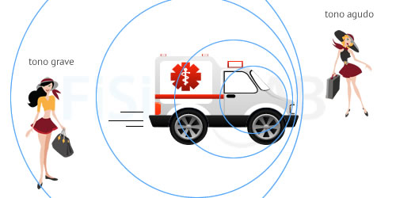

Este fenómeno que define el funcionamiento de los radares, el efecto Doppler, debe su nombre a su descubridor Christian Doppler, quien observó por primera vez en 1842 la curiosa interacción entre las ondas cuando aparecen cambios de frecuencia. Para un individuo que se encuentra en un espacio donde se está produciendo el efecto Doppler, esa alteración en la frecuencia se puede percibir como un pequeño aumento o disminución en la tonalidad de un sonido o de una luz, dependiendo del tipo de onda que actúe como protagonista. En sí, se trata de un fenómeno basado en la relación entre la velocidad relativa de una fuente, en este caso, un vehículo, y el observador, el radar en el caso que estamos discutiendo. De esa forma, cuando la fuente y el observador se acercan, la frecuencia que recibe el radar es mayor, mientras que cuando se alejan, la frecuencia aparente disminuye.
Aunque pueda parecer algo complicado de entender, no lo es tanto. De hecho, es un efecto que experimentas todos los días sin darte apenas cuenta. Piensa en una ambulancia: cuando esta se acerca, la identificas porque su sonido es cada vez más alto y más agudo; por el contrario, cuando se aleja, su sonido se va haciendo más grave a medida que va desapareciendo. Esto es debido a que mientras se acerca, las ondas sonoras que emite se van comprimiendo, aumentando la frecuencia, lo que resulta en un tono más alto y agudo. Al alejarse el efecto es el contrario: las ondas se expanden, disminuyendo la frecuencia entre ellas y dando lugar a un tono mucho más grave.
Ejemplo
La ambulancia de la imagen se desplaza de izquierda a derecha. Cuando se acerca a la chica de la figura que lleva un maletín, en la derecha de la imagen, la onda "se comprime", es decir, la longitud de onda es corta, la frecuencia alta y, por tanto, el tono del sonido percibido será agudo. Por otro lado, cuando la ambulancia se aleja, a la izquierda de la imagen, la onda "se descomprime", es decir, la longitud de onda es larga, la frecuencia baja y, por tanto, el tono que percibe la chica que lleva el bolso será grave.
